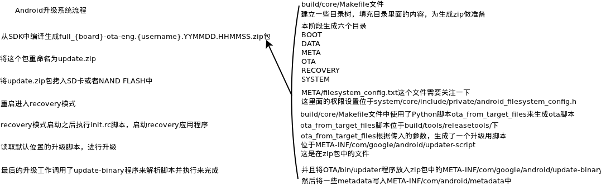

New Partiton Table
| [Part 0. boot] | [Start: 24] | [Length: 5] |
| [Part 1. kpanic] | [Start: 29] | [Length: 3] |
| [Part 2. system] | [Start: 32] | [Length: 100] |
| [Part 3. splash] | [Start: 132] | [Length: 2] |
| [Part 4. cache] | [Start: 134] | [Length: 40] |
| [Part 5. config] | [Start: 174] | [Length: 20] |
| [Part 6. userdata] | [Start: 194] | [Length: 314] |
| [Part 7. recovery] | [Start: 508] | [Length: 5] |
| [Part 8. misc] | [Start: 513] | [Length: 1] |
| [Part 9. tcc] | [Start: 514] | [Length: 1] |
| [Part 10. encrypt] | [Start: 515] | [Length: 5] |
| boot | StBlk: 24 | EndBlk: 28 | 0x000000000000-0x000000a00000 | 640K 160K |
| kpanic | StBlk: 29 | EndBlk: 31 | 0x000000a00000-0x000001000000 | |
| system | StBlk: 32 | EndBlk: 131 | 0x000001000000-0x00000d800000 | |
| splash | StBlk: 132 | EndBlk: 133 | 0x00000d800000-0x00000dc00000 | |
| cache | StBlk: 134 | EndBlk: 173 | 0x00000dc00000-0x000012c00000 | |
| config | StBlk: 174 | EndBlk: 193 | 0x000012c00000-0x000015400000 | |
| userdata | StBlk: 194 | EndBlk: 507 | 0x000015400000-0x00003c800000 | |
| recovery | StBlk: 508 | EndBlk: 512 | 0x00003c800000-0x00003d200000 | |
| misc | StBlk: 513 | EndBlk: 513 | 0x00003d200000-0x00003d400000 | |
| tcc | StBlk: 514 | EndBlk: 514 | 0x00003d400000-0x00003d600000 | |
| encrypt | StBlk: 515 | EndBlk: 535 | 0x00003d600000-0x00003e000000 | |
| MTDTotalBlk:512 | MTDStBlk: 24 | MTDEndBlk: 536 |
tcc_nand: blocksize 2097152 = 2048K = 2M
|  |
| Android升级系统流程 |
编译整个SDK的时候，参考build/core/Makefile文件
# Depending on the various images guarantees that the underlying
# directories are up-to-date.
$(BUILT_TARGET_FILES_PACKAGE): \
$(INSTALLED_BOOTIMAGE_TARGET) \
$(INSTALLED_RADIOIMAGE_TARGET) \
$(INSTALLED_RECOVERYIMAGE_TARGET) \
$(INSTALLED_SYSTEMIMAGE) \
$(INSTALLED_USERDATAIMAGE_TARGET) \
$(INSTALLED_ANDROID_INFO_TXT_TARGET) \
$(built_ota_tools) \
$(APKCERTS_FILE) \
$(HOST_OUT_EXECUTABLES)/fs_config \
| $(ACP)
@echo "Package target files: $@"
$(hide) rm -rf $@ $(zip_root)
$(hide) mkdir -p $(dir $@) $(zip_root) 建立了一个目录
@# Components of the recovery image recovery image的组件们
$(hide) mkdir -p $(zip_root)/RECOVERY 再刚才建立的目录下面建立一个RECOVERY的目录
$(hide) $(call package_files-copy-root, \
$(TARGET_RECOVERY_ROOT_OUT),$(zip_root)/RECOVERY/RAMDISK)
ifdef INSTALLED_KERNEL_TARGET
$(hide) $(ACP) $(INSTALLED_KERNEL_TARGET) $(zip_root)/RECOVERY/kernel
endif
ifdef INSTALLED_2NDBOOTLOADER_TARGET
$(hide) $(ACP) \
$(INSTALLED_2NDBOOTLOADER_TARGET) $(zip_root)/RECOVERY/second
endif
ifdef BOARD_KERNEL_CMDLINE
$(hide) echo "$(BOARD_KERNEL_CMDLINE)" > $(zip_root)/RECOVERY/cmdline
endif
ifdef BOARD_KERNEL_BASE
$(hide) echo "$(BOARD_KERNEL_BASE)" > $(zip_root)/RECOVERY/base
endif
ifdef BOARD_KERNEL_PAGESIZE
$(hide) echo "$(BOARD_KERNEL_PAGESIZE)" > $(zip_root)/RECOVERY/pagesize
endif
填充RECOVERY子目录的内容 用于生成recovery.img，包括kernel的image，recovery根文件系统的image
@# Components of the boot image
$(hide) mkdir -p $(zip_root)/BOOT
$(hide) $(call package_files-copy-root, \
$(TARGET_ROOT_OUT),$(zip_root)/BOOT/RAMDISK)
ifdef INSTALLED_KERNEL_TARGET
$(hide) $(ACP) $(INSTALLED_KERNEL_TARGET) $(zip_root)/BOOT/kernel
endif
ifdef INSTALLED_2NDBOOTLOADER_TARGET
$(hide) $(ACP) \
$(INSTALLED_2NDBOOTLOADER_TARGET) $(zip_root)/BOOT/second
endif
ifdef BOARD_KERNEL_CMDLINE
$(hide) echo "$(BOARD_KERNEL_CMDLINE)" > $(zip_root)/BOOT/cmdline
endif
ifdef BOARD_KERNEL_BASE
$(hide) echo "$(BOARD_KERNEL_BASE)" > $(zip_root)/BOOT/base
endif
ifdef BOARD_KERNEL_PAGESIZE
$(hide) echo "$(BOARD_KERNEL_PAGESIZE)" > $(zip_root)/BOOT/pagesize
endif
$(hide) $(foreach t,$(INSTALLED_RADIOIMAGE_TARGET),\
mkdir -p $(zip_root)/RADIO; \
$(ACP) $(t) $(zip_root)/RADIO/$(notdir $(t));)
填充BOOT子目录的内容 用于生成boot.img，和RECOVERY目录类似，包括kernel的image，根文件系统的image
@# Contents of the system image
$(hide) $(call package_files-copy-root, \
$(SYSTEMIMAGE_SOURCE_DIR),$(zip_root)/SYSTEM)
填充SYSTEM子目录的内容 这是升级的主要内容
@# Contents of the data image
$(hide) $(call package_files-copy-root, \
$(TARGET_OUT_DATA),$(zip_root)/DATA)
填充DATA子目录的内容
@# Extra contents of the OTA package
$(hide) mkdir -p $(zip_root)/OTA/bin
$(hide) $(ACP) $(INSTALLED_ANDROID_INFO_TXT_TARGET) $(zip_root)/OTA/
$(hide) $(ACP) $(PRIVATE_OTA_TOOLS) $(zip_root)/OTA/bin/
填充OTA/bin子目录的内容 是OTA升级自己使用的程序
@# Files that do not end up in any images, but are necessary to
@# build them.
$(hide) mkdir -p $(zip_root)/META
$(hide) $(ACP) $(APKCERTS_FILE) $(zip_root)/META/apkcerts.txt
$(hide) echo "$(PRODUCT_OTA_PUBLIC_KEYS)" > $(zip_root)/META/otakeys.txt
$(hide) echo "recovery_api_version=$(PRIVATE_RECOVERY_API_VERSION)" > $(zip_root)/META/misc_info.txt
ifdef BOARD_FLASH_BLOCK_SIZE
$(hide) echo "blocksize=$(BOARD_FLASH_BLOCK_SIZE)" >> $(zip_root)/META/misc_info.txt
endif
ifdef BOARD_BOOTIMAGE_PARTITION_SIZE
$(hide) echo "boot_size=$(BOARD_BOOTIMAGE_PARTITION_SIZE)" >> $(zip_root)/META/misc_info.txt
endif
ifdef BOARD_RECOVERYIMAGE_PARTITION_SIZE
$(hide) echo "recovery_size=$(BOARD_RECOVERYIMAGE_PARTITION_SIZE)" >> $(zip_root)/META/misc_info.txt
endif
ifdef BOARD_SYSTEMIMAGE_PARTITION_SIZE
$(hide) echo "system_size=$(BOARD_SYSTEMIMAGE_PARTITION_SIZE)" >> $(zip_root)/META/misc_info.txt
endif
ifdef BOARD_USERDATAIMAGE_PARTITION_SIZE
$(hide) echo "userdata_size=$(BOARD_USERDATAIMAGE_PARTITION_SIZE)" >> $(zip_root)/META/misc_info.txt
endif
$(hide) echo "tool_extensions=$(tool_extensions)" >> $(zip_root)/META/misc_info.txt
ifdef mkyaffs2_extra_flags
$(hide) echo "mkyaffs2_extra_flags=$(mkyaffs2_extra_flags)" >> $(zip_root)/META/misc_info.txt
endif
填充META子目录的内容，这里包含了OTA脚本需要的一些附加信息
@# Zip everything up, preserving symlinks
$(hide) (cd $(zip_root) && zip -qry ../$(notdir $@) .)
将所有内容打包，供下一阶段使用
@# Run fs_config on all the system files in the zip, and save the output
$(hide) zipinfo -1 $@ | awk -F/ 'BEGIN { OFS="/" } /^SYSTEM\// {$$1 = "system"; print}' | $(HOST_OUT_EXECUTABLES)/fs_config > $(zip_root)/META/filesystem_config.txt
$(hide) (cd $(zip_root) && zip -q ../$(notdir $@) META/filesystem_config.txt)
生成META/filesystem_config.txt并将其加入到zip包中，该文件保存了system目录下各目录，文件的权限及owner
刚才说了那么多的目录，我是真心不知道这些目录在哪里，因为整个Make过程变量实在是太多了，除非记录所有信息，然后慢慢分析
不过呢，我在out目录下面find ./ -name了一下filesystem_config.txt文件，于是找到了目录路径
out/target/product/{board}/obj/PACKAGING/target_files_intermediates/
这个目录下面会看到每次编译出来的文件夹和压缩包
我们可以进到最近编译的full_{board}_target_files-eng.{people name}.{YYYYMMDD}.{HHMMSS}/目录下
然后，就会看到BOOT,DATA,META,OTA,RECOVERY,SYSTEM这几个目录了
下面关注一下这几个目录里面的内容
BOOT DATA META OTA RECOVERY SYSTEM
.
├── base
├── cmdline
├── kernel
├── pagesize
└── RAMDISK
├── data
├── default.prop
├── dev
├── init
├── init.goldfish.rc
├── initlogo.rle
├── init.m801_88.rc
├── init.rc
├── lib
│ └── modules
│ ├── ehci-hcd.ko
│ ├── ohci-hcd.ko
│ ├── tcc_init_nand.ko
│ ├── tcc_mtd.ko
│ ├── tcc_nand.ko
│ ├── tcc_ndd.ko
│ └── ufsd.ko
├── proc
├── sbin
│ ├── adbd
│ └── ueventd -> ../init
├── sys
├── system
├── ueventd.goldfish.rc
├── ueventd.m801_88.rc
└── ueventd.rc
9 directories, 22 files
top
.
└── app
├── ApiDemos.apk
├── test_algorithm_host
├── test_char_traits_host
├── test_functional_host
├── test_iomanip_host
├── test_ios_base_host
├── test_ios_pos_types_host
├── test_iostream_host
├── test_iterator_host
├── test_limits_host
├── test_list_host
├── test_memory_host
├── test_set_host
├── test_sstream_host
├── test_streambuf_host
├── test_string_host
├── test_type_traits_host
├── test_uninitialized_host
└── test_vector_host
1 directory, 19 files
top
. ├── apkcerts.txt ├── filesystem_config.txt ├── misc_info.txt └── otakeys.txt 0 directories, 4 filestop
.
├── android-info.txt
└── bin
├── applypatch
├── applypatch_static
├── check_prereq
└── updater
1 directory, 5 files
top
.
├── base
├── cmdline
├── kernel
├── pagesize
└── RAMDISK
├── data
├── default.prop
├── dev
├── etc
│ └── recovery.fstab
├── init
├── initlogo.rle
├── init.m801_88.rc
├── init.rc
├── lib
│ └── modules
│ ├── ehci-hcd.ko
│ ├── ohci-hcd.ko
│ ├── tcc_init_nand.ko
│ ├── tcc_mtd.ko
│ ├── tcc_nand.ko
│ ├── tcc_ndd.ko
│ └── ufsd.ko
├── proc
├── res
│ ├── images
│ │ ├── icon_error.png
│ │ ├── icon_installing.png
│ │ ├── indeterminate1.png
│ │ ├── indeterminate2.png
│ │ ├── indeterminate3.png
│ │ ├── indeterminate4.png
│ │ ├── indeterminate5.png
│ │ ├── indeterminate6.png
│ │ ├── progress_empty.png
│ │ └── progress_fill.png
│ └── keys
├── sbin
│ ├── adbd
│ ├── recovery
│ └── ueventd -> ../init
├── sys
├── system
├── tmp
├── ueventd.goldfish.rc
├── ueventd.m801_88.rc
└── ueventd.rc
13 directories, 34 files
top
.
├── app
│ ├── AccountAndSyncSettings.apk
│ ├── ApplicationsProvider.apk
│ ├── Bluetooth.apk
│ ├── Browser.apk
│ ├── Calculator.apk
│ ├── Calendar.apk
│ ├── CalendarProvider.apk
│ ├── Camera.apk
│ ├── CertInstaller.apk
│ ├── Contacts.apk
│ ├── ContactsProvider.apk
│ ├── CustomLocale.apk
│ ├── DefaultContainerService.apk
│ ├── DeskClock.apk
│ ├── Development.apk
│ ├── DownloadProvider.apk
│ ├── DownloadProviderUi.apk
│ ├── DrmProvider.apk
│ ├── Email.apk
│ ├── Gallery3D.apk
│ ├── HTMLViewer.apk
│ ├── LatinIME.apk
│ ├── Launcher2.apk
│ ├── LiveWallpapers.apk
│ ├── LiveWallpapersPicker.apk
│ ├── MagicSmokeWallpapers.apk
│ ├── MediaProvider.apk
│ ├── Mms.apk
│ ├── Music.apk
│ ├── OpenWnn.apk
│ ├── PackageInstaller.apk
│ ├── Phone.apk
│ ├── PicoTts.apk
│ ├── PinyinIME.apk
│ ├── Protips.apk
│ ├── Provision.apk
│ ├── QuickSearchBox.apk
│ ├── SampleDVBTPlayer.apk
│ ├── SampleISDBTPlayer.apk
│ ├── SampleTDMBPlayer.apk
│ ├── Settings.apk
│ ├── SettingsProvider.apk
│ ├── SoundRecorder.apk
│ ├── SpareParts.apk
│ ├── SpeechRecorder.apk
│ ├── SystemUI.apk
│ ├── TelechipsAudioEffect.apk
│ ├── TelechipsSettings.apk
│ ├── TelechipsSystemUpdater.apk
│ ├── TelephonyProvider.apk
│ ├── Term.apk
│ ├── TSCalibration.apk
│ ├── TtsService.apk
│ ├── UserDictionaryProvider.apk
│ ├── VisualizationWallpapers.apk
│ ├── VoiceDialer.apk
│ └── VpnServices.apk
├── atheros
│ └── 1020200
│ ├── PS_ASIC.pst
│ └── RamPatch.txt
├── bin
│ ├── abtfilt
│ ├── akmd8975
│ ├── alsa_amixer
│ ├── alsa_aplay
│ ├── alsa_ctl
│ ├── am
│ ├── applypatch
│ ├── applypatch_static
│ ├── app_process
│ ├── audioloop
│ ├── bccmd
│ ├── bluetoothd
│ ├── bmgr
│ ├── bootanimation
│ ├── bugreport
│ ├── busybox
│ ├── cat -> toolbox
│ ├── check_prereq
│ ├── chkntfs
│ ├── chmod -> toolbox
│ ├── chown -> toolbox
│ ├── cmp -> toolbox
│ ├── cp -> busybox
│ ├── dalvikvm
│ ├── date -> toolbox
│ ├── dbus-daemon
│ ├── dd -> toolbox
│ ├── debuggerd
│ ├── dexopt
│ ├── df -> toolbox
│ ├── dhcpcd
│ ├── dmesg -> toolbox
│ ├── dnsmasq
│ ├── drvdebugctrl
│ ├── dumpstate
│ ├── dumpsys
│ ├── dvbtdump
│ ├── dvz
│ ├── flash_eraseall
│ ├── flash_image
│ ├── fsck_msdos
│ ├── gdbjithelper
│ ├── gdbserver
│ ├── getevent -> toolbox
│ ├── getprop -> toolbox
│ ├── grep -> busybox
│ ├── gzip
│ ├── hciattach
│ ├── hd -> toolbox
│ ├── hostapd
│ ├── hostapd_cli
│ ├── hostapd_wps
│ ├── id -> toolbox
│ ├── ifconfig -> toolbox
│ ├── iftop -> toolbox
│ ├── ime
│ ├── input
│ ├── InputChannel_test
│ ├── InputDispatcher_test
│ ├── InputPublisherAndConsumer_test
│ ├── InputReader_test
│ ├── insmod -> toolbox
│ ├── installd
│ ├── ioctl -> toolbox
│ ├── ionice -> toolbox
│ ├── iptables
│ ├── iwconfig
│ ├── iwlist
│ ├── keystore
│ ├── keystore_cli
│ ├── kill -> toolbox
│ ├── linker
│ ├── ln -> toolbox
│ ├── log -> toolbox
│ ├── logcat
│ ├── logwrapper
│ ├── Looper_test
│ ├── ls -> toolbox
│ ├── lsmod -> toolbox
│ ├── lsof -> toolbox
│ ├── mediaserver
│ ├── mem
│ ├── mkdir -> toolbox
│ ├── mkntfs
│ ├── monkey
│ ├── mount -> toolbox
│ ├── mtpd
│ ├── mv -> toolbox
│ ├── nandread -> toolbox
│ ├── ndc
│ ├── netcfg
│ ├── netd
│ ├── netstat -> toolbox
│ ├── newfs_msdos -> toolbox
│ ├── notify -> toolbox
│ ├── ObbFile_test
│ ├── omx_tests
│ ├── pand
│ ├── ping
│ ├── pm
│ ├── pppd
│ ├── printenv -> toolbox
│ ├── ps -> toolbox
│ ├── qemud
│ ├── qemu-props
│ ├── racoon
│ ├── radiooptions
│ ├── reboot -> toolbox
│ ├── recEvent
│ ├── record
│ ├── recovery
│ ├── remote_player_service
│ ├── renice -> toolbox
│ ├── rild
│ ├── rm -> toolbox
│ ├── rmdir -> toolbox
│ ├── rmmod -> toolbox
│ ├── route -> toolbox
│ ├── rtp_test
│ ├── run-as
│ ├── schedtest
│ ├── schedtop -> toolbox
│ ├── sdcard
│ ├── sdptool
│ ├── sendevent -> toolbox
│ ├── service
│ ├── servicemanager
│ ├── setconsole -> toolbox
│ ├── setprop -> toolbox
│ ├── setup_dvbt.sh
│ ├── setup_dxb.sh
│ ├── setup_iptv_ip.sh
│ ├── setup_iptv.sh
│ ├── setup_tdmb.sh
│ ├── sh
│ ├── showlease
│ ├── skia_test
│ ├── sleep -> toolbox
│ ├── smd -> toolbox
│ ├── stagefright
│ ├── start -> toolbox
│ ├── stop -> toolbox
│ ├── String8_test
│ ├── surfaceflinger
│ ├── svc
│ ├── sync -> toolbox
│ ├── system_server
│ ├── tar -> busybox
│ ├── tc
│ ├── tcc_dxb_service
│ ├── tdmbdump
│ ├── testid3
│ ├── toolbox
│ ├── top -> toolbox
│ ├── umount -> toolbox
│ ├── unzip -> busybox
│ ├── updater
│ ├── uptime -> toolbox
│ ├── vdc
│ ├── vi -> busybox
│ ├── vmstat -> toolbox
│ ├── vold
│ ├── watchprops -> toolbox
│ ├── wipe -> toolbox
│ ├── wlan_tool
│ ├── wmiconfig
│ ├── wpa_cli
│ └── wpa_supplicant
├── build.prop
├── etc
│ ├── apns-conf.xml
│ ├── asound.conf
│ ├── bluetooth
│ │ ├── audio.conf
│ │ ├── auto_pairing.conf
│ │ ├── blacklist.conf
│ │ ├── input.conf
│ │ └── main.conf
│ ├── dbus.conf
│ ├── dhcpcd
│ │ ├── dhcpcd.conf
│ │ ├── dhcpcd-hooks
│ │ │ ├── 20-dns.conf
│ │ │ └── 95-configured
│ │ └── dhcpcd-run-hooks
│ ├── event-log-tags
│ ├── hosts
│ ├── init.goldfish.sh
│ ├── media_profiles.xml
│ ├── NOTICE.html.gz
│ ├── permissions
│ │ ├── android.hardware.camera.flash-autofocus.xml
│ │ ├── android.hardware.camera.front.xml
│ │ ├── android.hardware.location.gps.xml
│ │ ├── android.hardware.touchscreen.multitouch.jazzhand.xml
│ │ ├── android.hardware.wifi.xml
│ │ ├── android.serialport.xml
│ │ ├── android.software.live_wallpaper.xml
│ │ ├── android.software.sip.voip.xml
│ │ ├── com.android.location.provider.xml
│ │ ├── com.telechips.android.atsc.xml
│ │ ├── com.telechips.android.dvbt.xml
│ │ ├── com.telechips.android.iptv.xml
│ │ ├── com.telechips.android.isdbt.xml
│ │ ├── com.telechips.android.tdmb.xml
│ │ ├── handheld_core_hardware.xml
│ │ └── platform.xml
│ ├── ppp
│ │ └── ip-up-vpn
│ ├── security
│ │ ├── cacerts.bks
│ │ └── otacerts.zip
│ ├── vold.conf
│ ├── vold.fstab
│ └── wifi
│ ├── hostapd.conf
│ └── wpa_supplicant.conf
├── fonts
│ ├── Clockopia.ttf
│ ├── DroidSansArabic.ttf
│ ├── DroidSans-Bold.ttf
│ ├── DroidSansFallback_DxB.ttf
│ ├── DroidSansFallback.ttf
│ ├── DroidSansHebrew.ttf
│ ├── DroidSansMono.ttf
│ ├── DroidSansThai.ttf
│ ├── DroidSans.ttf
│ ├── DroidSerif-BoldItalic.ttf
│ ├── DroidSerif-Bold.ttf
│ ├── DroidSerif-Italic.ttf
│ ├── DroidSerif-Regular.ttf
│ └── HMFMOLD_18.bdf
├── framework
│ ├── am.jar
│ ├── android.policy.jar
│ ├── android.serialport.jar
│ ├── android.test.runner.jar
│ ├── bmgr.jar
│ ├── bouncycastle.jar
│ ├── com.android.location.provider.jar
│ ├── com.telechips.android.atsc.jar
│ ├── com.telechips.android.dvbt.jar
│ ├── com.telechips.android.iptv.jar
│ ├── com.telechips.android.isdbt.jar
│ ├── com.telechips.android.tdmb.jar
│ ├── core.jar
│ ├── core-junit.jar
│ ├── ext.jar
│ ├── framework.jar
│ ├── framework-res.apk
│ ├── ime.jar
│ ├── input.jar
│ ├── javax.obex.jar
│ ├── monkey.jar
│ ├── pm.jar
│ ├── services.jar
│ ├── sqlite-jdbc.jar
│ └── svc.jar
├── key_3000000.psr
├── key_921600.psr
├── lib
│ ├── bluez-plugin
│ │ ├── audio.so
│ │ └── input.so
│ ├── dejitter.so
│ ├── egl
│ │ ├── egl.cfg
│ │ ├── libEGL_mali.so
│ │ ├── libGLES_android.so
│ │ ├── libGLESv1_CM_mali.so
│ │ └── libGLESv2_mali.so
│ ├── hw
│ │ ├── acoustics.default.so
│ │ ├── alsa.default.so
│ │ ├── gps.goldfish.so
│ │ ├── gralloc.default.so
│ │ ├── gralloc.tcc88xx.so
│ │ ├── lights.tcc88xx.so
│ │ ├── overlay.tcc88xx.so
│ │ ├── sensors.goldfish.so
│ │ └── sensors.tcc88xx.so
│ ├── inputraw.so
│ ├── invoke_mock_media_player.so
│ ├── liba2dp.so
│ ├── libacc.so
│ ├── libandroid_runtime.so
│ ├── libandroid_servers.so
│ ├── libandroid.so
│ ├── libasound.so
│ ├── libatsc_jni.so
│ ├── libatsc.so
│ ├── libaudioeffect_jni.so
│ ├── libaudioflinger.so
│ ├── libaudiopolicy.so
│ ├── libaudio.so
│ ├── libbinder.so
│ ├── libbluedroid.so
│ ├── libbluetoothd.so
│ ├── libbluetooth.so
│ ├── libcamera_client.so
│ ├── libcameraservice.so
│ ├── libcamera.so
│ ├── libc_malloc_debug_leak.so
│ ├── libc_malloc_debug_qemu.so
│ ├── libcrypto.so
│ ├── libc.so
│ ├── libctest.so
│ ├── libcutils.so
│ ├── libdbus.so
│ ├── libdiskconfig.so
│ ├── libdl.so
│ ├── libdrm1_jni.so
│ ├── libdrm1.so
│ ├── lib.DVBDemux.Input.so
│ ├── libdvbt_jni.so
│ ├── libdvbt.so
│ ├── libdvm.so
│ ├── libdxbfont.so
│ ├── libdxbsc.so
│ ├── libdxbutils.so
│ ├── libeffects.so
│ ├── libEGL.so
│ ├── libemoji.so
│ ├── libETC1.so
│ ├── libexif.so
│ ├── libexpat.so
│ ├── libextenddisplay.so
│ ├── libFFTEm.so
│ ├── libGLESv1_CM.so
│ ├── libGLESv2.so
│ ├── libgui.so
│ ├── libhardware_legacy.so
│ ├── libhardware.so
│ ├── libhdmi.so
│ ├── libhostapd_client.so
│ ├── libicui18n.so
│ ├── libicuuc.so
│ ├── libiprouteutil.so
│ ├── libiptv_jni.so
│ ├── libiptv.so
│ ├── libISDBTDemux.Input.so
│ ├── libisdbt_jni.so
│ ├── libisdbt.so
│ ├── libjnigraphics.so
│ ├── libjni_latinime.so
│ ├── libjni_pinyinime.so
│ ├── libjpeg.so
│ ├── liblog.so
│ ├── libMali.so
│ ├── libmedia_jni.so
│ ├── libmediaplayerservice.so
│ ├── libmedia.so
│ ├── libmediastreamer2.so
│ ├── libmock_ril.so
│ ├── libm.so
│ ├── libmtdutils1.so
│ ├── libnativehelper.so
│ ├── libnetlink.so
│ ├── libnetutils.so
│ ├── libnfc_ndef.so
│ ├── libOMX.TCC.aacdec.so
│ ├── libOMX.TCC.aacenc.so
│ ├── libOMX.TCC.alsasink.so
│ ├── libOMX.TCC.apedec.so
│ ├── libOMX.TCC.ATSCDemux.so
│ ├── libOMX.TCC.ATSCTuner.so
│ ├── libOMX.TCC.audio.so
│ ├── libOMX.TCC.base.so
│ ├── libOMX.TCC.bsacdec.so
│ ├── libOMX.TCC.DVBDemux.so
│ ├── libOMX.TCC.DVBTTuner.so
│ ├── libOMX.TCC.DxB.AudioDec.so
│ ├── libOMX.TCC.DxB.base.so
│ ├── libOMX.TCC.DxB.VideoDec.so
│ ├── libOMX.TCC.DxB.VPUDec.so
│ ├── libOMX.TCC.fbdevsink.so
│ ├── libOMX.TCC.flacdec.so
│ ├── libOMX.TCC.IPTVDemux.so
│ ├── libOMX.TCC.ISDBTDemux.so
│ ├── libOMX.TCC.ISDBTTuner.so
│ ├── libOMX.TCC.mp2dec.so
│ ├── libOMX.TCC.mp3dec.so
│ ├── libOMX.TCC.mp3enc.so
│ ├── libOMX.TCC.MTV818.Tuner.so
│ ├── libOMX.TCC.NMI32X.Tuner.so
│ ├── libOMX.TCC.PADParser.so
│ ├── libOMX.TCC.pcmdec.so
│ ├── libOMX.TCC.spdif.so
│ ├── libOMX.TCC.TCC351X.Tuner.so
│ ├── libOMX.TCC.tdmbdemux.so
│ ├── libOMX.TCC.tdmbrec.so
│ ├── libOMX.TCC.tdmbtuner.so
│ ├── libOMX.TCC.Toshiba.Tuner.so
│ ├── libOMX.TCC.Tuner.interface.so
│ ├── libOMX.TCC.VideoDec.so
│ ├── libOMX.TCC.VideoEnc.so
│ ├── libOMX.TCC.vorbisdec.so
│ ├── libOMX.TCC.VPUDec.so
│ ├── libOMX.TCC.VPUEnc.so
│ ├── libOMX.TCC.wmadec.so
│ ├── libOpenSLES.so
│ ├── libortp.so
│ ├── libpagemap.so
│ ├── libpixelflinger.so
│ ├── libpmap.so
│ ├── libreference-cdma-sms.so
│ ├── libreference-ril.so
│ ├── libril.so
│ ├── librs_jni.so
│ ├── libRS.so
│ ├── librtp_jni.so
│ ├── libsensorservice.so
│ ├── libserial_port.so
│ ├── libskiagl.so
│ ├── libskia.so
│ ├── libsonivox.so
│ ├── libsoundpool.so
│ ├── libspdifsound.so
│ ├── libsqlite_jni.so
│ ├── libsqlite.so
│ ├── libSR_AudioIn.so
│ ├── libsrec_jni.so
│ ├── libssl.so
│ ├── libstagefright_amrnb_common.so
│ ├── libstagefright_avc_common.so
│ ├── libstagefright_color_conversion.so
│ ├── libstagefright_enc_common.so
│ ├── libstagefright_foundation.so
│ ├── libstagefrighthw.so
│ ├── libstagefright_omx.so
│ ├── libstagefright.so
│ ├── libstdc++.so
│ ├── libstlport.so
│ ├── libsurfaceflinger_client.so
│ ├── libsurfaceflinger.so
│ ├── libsystem_server.so
│ ├── libsysutils.so
│ ├── libTCC_CDK_AUDIO.so
│ ├── libTCC_CDK_CONFIG.so
│ ├── libTCC_CDK_DXB_LIB.so
│ ├── libTCC_CDK_LIB.so
│ ├── libTCC_CDK_WRAPPER.so
│ ├── libTCC_Decoder.so
│ ├── libTCCDxBInterface.so
│ ├── libtccdxbspdifparser.so
│ ├── libTCC_Encoder.so
│ ├── libTCCInterSubtitle.so
│ ├── libTCC_OMXCore.so
│ ├── libTCCRemotePlayerClient.so
│ ├── libTCCsubtitle.so
│ ├── libtdmb_jni.so
│ ├── libtdmb.so
│ ├── libterm.so
│ ├── libthread_db.so
│ ├── libtslib.so
│ ├── libttspico.so
│ ├── libttssynthproxy.so
│ ├── libui.so
│ ├── libUMP.so
│ ├── libutils.so
│ ├── libvorbisidec.so
│ ├── libwebcore.so
│ ├── libwnndict.so
│ ├── libWnnEngDic.so
│ ├── libWnnJpnDic.so
│ ├── libwpa_client.so
│ ├── libz.so
│ ├── linear.so
│ ├── modules
│ │ ├── vpu_decoder_ext.ko
│ │ ├── vpu_decoder.ko
│ │ ├── vpu_encoder.ko
│ │ └── vpu_manager.ko
│ ├── pthres.so
│ └── soundfx
│ ├── libbundlewrapper.so
│ ├── libreverbwrapper.so
│ ├── libtcc_soundeffect.so
│ └── libvisualizer.so
├── media
│ └── audio
│ ├── alarms
│ │ ├── Alarm_Beep_01.ogg
│ │ ├── Alarm_Beep_02.ogg
│ │ ├── Alarm_Beep_03.ogg
│ │ ├── Alarm_Buzzer.ogg
│ │ ├── Alarm_Classic.ogg
│ │ └── Alarm_Rooster_02.ogg
│ ├── notifications
│ │ ├── Beat_Box_Android.ogg
│ │ ├── CaffeineSnake.ogg
│ │ ├── DearDeer.ogg
│ │ ├── DontPanic.ogg
│ │ ├── F1_MissedCall.ogg
│ │ ├── F1_New_MMS.ogg
│ │ ├── F1_New_SMS.ogg
│ │ ├── Heaven.ogg
│ │ ├── Highwire.ogg
│ │ ├── KzurbSonar.ogg
│ │ ├── OnTheHunt.ogg
│ │ ├── TaDa.ogg
│ │ ├── Tinkerbell.ogg
│ │ └── Voila.ogg
│ ├── ringtones
│ │ ├── BeatPlucker.ogg
│ │ ├── BentleyDubs.ogg
│ │ ├── BirdLoop.ogg
│ │ ├── CaribbeanIce.ogg
│ │ ├── CrazyDream.ogg
│ │ ├── CurveBall.ogg
│ │ ├── DreamTheme.ogg
│ │ ├── EtherShake.ogg
│ │ ├── FriendlyGhost.ogg
│ │ ├── GameOverGuitar.ogg
│ │ ├── Growl.ogg
│ │ ├── InsertCoin.ogg
│ │ ├── LoopyLounge.ogg
│ │ ├── LoveFlute.ogg
│ │ ├── MidEvilJaunt.ogg
│ │ ├── MildlyAlarming.ogg
│ │ ├── NewPlayer.ogg
│ │ ├── Noises1.ogg
│ │ ├── Noises2.ogg
│ │ ├── Noises3.ogg
│ │ ├── OrganDub.ogg
│ │ ├── Ring_Classic_02.ogg
│ │ ├── Ring_Digital_02.ogg
│ │ ├── Ring_Synth_02.ogg
│ │ ├── Ring_Synth_04.ogg
│ │ ├── RomancingTheTone.ogg
│ │ ├── SitarVsSitar.ogg
│ │ ├── SpringyJalopy.ogg
│ │ ├── Terminated.ogg
│ │ ├── TwirlAway.ogg
│ │ ├── VeryAlarmed.ogg
│ │ └── World.ogg
│ └── ui
│ ├── camera_click.ogg
│ ├── Effect_Tick.ogg
│ ├── KeypressDelete.ogg
│ ├── KeypressReturn.ogg
│ ├── KeypressSpacebar.ogg
│ ├── KeypressStandard.ogg
│ ├── Lock.ogg
│ ├── Unlock.ogg
│ └── VideoRecord.ogg
├── ts.conf
├── tts
│ └── lang_pico
│ ├── de-DE_gl0_sg.bin
│ ├── de-DE_ta.bin
│ ├── en-GB_kh0_sg.bin
│ ├── en-GB_ta.bin
│ ├── en-US_lh0_sg.bin
│ ├── en-US_ta.bin
│ ├── es-ES_ta.bin
│ ├── es-ES_zl0_sg.bin
│ ├── fr-FR_nk0_sg.bin
│ ├── fr-FR_ta.bin
│ ├── it-IT_cm0_sg.bin
│ └── it-IT_ta.bin
├── usr
│ ├── icu
│ │ └── icudt44l.dat
│ ├── keychars
│ │ ├── m801_88-gpiokey.kcm.bin
│ │ ├── qwerty2.kcm.bin
│ │ └── qwerty.kcm.bin
│ ├── keylayout
│ │ ├── AVRCP.kl
│ │ ├── h2w_headset.kl
│ │ ├── m801_88-gpiokey.kl
│ │ ├── qwerty.kl
│ │ └── USB-compliant_keyboard.kl
│ ├── share
│ │ ├── alsa
│ │ │ ├── alsa.conf
│ │ │ ├── cards
│ │ │ │ └── aliases.conf
│ │ │ └── pcm
│ │ │ ├── center_lfe.conf
│ │ │ ├── default.conf
│ │ │ ├── dmix.conf
│ │ │ ├── dpl.conf
│ │ │ ├── dsnoop.conf
│ │ │ ├── front.conf
│ │ │ ├── iec958.conf
│ │ │ ├── modem.conf
│ │ │ ├── rear.conf
│ │ │ ├── side.conf
│ │ │ ├── surround40.conf
│ │ │ ├── surround41.conf
│ │ │ ├── surround50.conf
│ │ │ ├── surround51.conf
│ │ │ └── surround71.conf
│ │ ├── bmd
│ │ │ ├── RFFspeed_501.bmd
│ │ │ └── RFFstd_501.bmd
│ │ └── zoneinfo
│ │ ├── zoneinfo.dat
│ │ ├── zoneinfo.idx
│ │ └── zoneinfo.version
│ └── srec
│ └── config
│ └── en.us
│ ├── baseline11k.par
│ ├── baseline8k.par
│ ├── baseline.par
│ ├── dictionary
│ │ ├── basic.ok
│ │ ├── cmu6plus.ok.zip
│ │ └── enroll.ok
│ ├── g2p
│ │ └── en-US-ttp.data
│ ├── grammars
│ │ ├── boolean.g2g
│ │ ├── phone_type_choice.g2g
│ │ └── VoiceDialer.g2g
│ └── models
│ ├── generic11_f.swimdl
│ ├── generic11.lda
│ ├── generic11_m.swimdl
│ ├── generic8_f.swimdl
│ ├── generic8.lda
│ ├── generic8_m.swimdl
│ └── generic.swiarb
├── wifi
│ ├── ar6000.ko
│ └── ath6k
│ └── AR6003
│ ├── hw2.0
│ │ ├── athtcmd_ram.bin
│ │ ├── athwlan.bin.z77
│ │ ├── bdata.SD31.bin
│ │ ├── data.patch.hw2_0.bin
│ │ ├── device.bin
│ │ └── otp.bin.z77
│ └── hw2.1.1
│ ├── athtcmd_ram.bin
│ ├── athwlan.bin
│ ├── athwlan_mobile.bin
│ ├── athwlan_router.bin
│ ├── athwlan_tablet.bin
│ ├── bdata.SD31.bin
│ ├── calData_AR6103_A05_golden.bin
│ ├── data.patch.hw3_0.bin
│ ├── device.bin
│ └── otp.bin
└── xbin
├── add-property-tag
├── agent
├── attest
├── avinfo
├── avtest
├── bdaddr
├── btool
├── bttest
├── check-lost+found
├── cpueater
├── crasher
├── daemonize
├── dbus-monitor
├── dbus-send
├── dexdump
├── directiotest
├── hciconfig
├── hcidump
├── hcitool
├── hstest
├── l2ping
├── l2test
├── latencytop
├── librank
├── lmptest
├── nc
├── netperf
├── netserver
├── opcontrol
├── oprofiled
├── procmem
├── procrank
├── rawbu
├── rctest
├── rfcomm
├── scotest
├── scp
├── sdptest
├── showmap
├── showslab
├── sqlite3
├── ssh
├── strace
├── su
├── tcpdump
├── timeinfo
└── vfp-crasher
51 directories, 708 files
top
有一个文件，META/filesystem_config.txt，里面记录了system下的各目录，文件的权限及owner
system 0 0 755 system/wifi 0 0 755 system/wifi/ar6000.ko 0 0 644 system/wifi/ath6k 0 0 755 system/wifi/ath6k/AR6003 0 0 755 system/wifi/ath6k/AR6003/hw2.0 0 0 755 system/wifi/ath6k/AR6003/hw2.0/otp.bin.z77 0 0 644 system/wifi/ath6k/AR6003/hw2.0/device.bin 0 0 644 system/wifi/ath6k/AR6003/hw2.0/bdata.SD31.bin 0 0 644 system/wifi/ath6k/AR6003/hw2.0/athtcmd_ram.bin 0 0 644
这里面的权限的设定，是由fs_config设置的，这个程序的源码在build/tools/fs_config/下 fs_config.c中包含了一个头文件 "private/android_filesystem_config.h" 这个.h文件的路径在 system/core/include/private/android_filesystem_config.h
下面Makefile里还有一段代码
# OTA update package
name := $(TARGET_PRODUCT)
ifeq ($(TARGET_BUILD_TYPE),debug)
name := $(name)_debug
endif
name := $(name)-ota-$(FILE_NAME_TAG)
INTERNAL_OTA_PACKAGE_TARGET := $(PRODUCT_OUT)/$(name).zip
$(INTERNAL_OTA_PACKAGE_TARGET): KEY_CERT_PAIR := $(DEFAULT_KEY_CERT_PAIR)
$(INTERNAL_OTA_PACKAGE_TARGET): $(BUILT_TARGET_FILES_PACKAGE) $(OTATOOLS)
@echo "Package OTA: $@"
$(hide) ./build/tools/releasetools/ota_from_target_files -v \
-p $(HOST_OUT) \
-k $(KEY_CERT_PAIR) \
$(BUILT_TARGET_FILES_PACKAGE) $@
.PHONY: otapackage
otapackage: $(INTERNAL_OTA_PACKAGE_TARGET)
关键的代码是
$(hide) ./build/tools/releasetools/ota_from_target_files -v \
-p $(HOST_OUT) \
-k $(KEY_CERT_PAIR) \
$(BUILT_TARGET_FILES_PACKAGE) $@
这里面的脚本ota_from_target_file是一个python脚本，来制作OTA升级的zip包
这个文件存在于build/tools/releasetools/
可以先执行一下这个脚本，看看输出的帮助信息
./ota_from_target_files
Given a target-files zipfile, produces an OTA package that installs
that build. An incremental OTA is produced if -i is given, otherwise
a full OTA is produced.
Usage: ota_from_target_files [flags] input_target_files output_ota_package
-b (--board_config) <file>
Deprecated.
-k (--package_key) <key>
Key to use to sign the package (default is
"build/target/product/security/testkey").
-i (--incremental_from) <file>
Generate an incremental OTA using the given target-files zip as
the starting build.
-w (--wipe_user_data)
Generate an OTA package that will wipe the user data partition
when installed.
-n (--no_prereq)
Omit the timestamp prereq check normally included at the top of
the build scripts (used for developer OTA packages which
legitimately need to go back and forth).
-e (--extra_script) <file>
Insert the contents of file at the end of the update script.
-p (--path) <dir>
Prepend <dir>/bin to the list of places to search for binaries
run by this script, and expect to find jars in <dir>/framework.
-s (--device_specific) <file>
Path to the python module containing device-specific
releasetools code.
-x (--extra) <key=value>
Add a key/value pair to the 'extras' dict, which device-specific
extension code may look at.
-v (--verbose)
Show command lines being executed.
-h (--help)
Display this usage message and exit.
这些参数当中，我们主要关注p,k以及w参数，-w表示要清除掉userdata分区的，这也是需要解决的问题，如何将data分区下的希望保留的数据，不在升级过程中被擦除掉。
下面就要分析一下文件内容了
首先从入口函数开始
<exmaple> if __name__ == '__main__':try: common.CloseInheritedPipes() main(sys.argv[1:]) except common.ExternalError, e: print print " ERROR: %s" % (e,) print sys.exit(1) </example>
调用了main函数
def main(argv):
def option_handler(o, a):
if o in ("-b", "--board_config"):
pass # deprecated
elif o in ("-k", "--package_key"):
OPTIONS.package_key = a
elif o in ("-i", "--incremental_from"):
OPTIONS.incremental_source = a
elif o in ("-w", "--wipe_user_data"):
OPTIONS.wipe_user_data = True
elif o in ("-n", "--no_prereq"):
OPTIONS.omit_prereq = True
elif o in ("-e", "--extra_script"):
OPTIONS.extra_script = a
elif o in ("--worker_threads"):
OPTIONS.worker_threads = int(a)
else:
return False
return True
args = common.ParseOptions(argv, __doc__,
extra_opts="b:k:i:d:wne:",
extra_long_opts=["board_config=",
"package_key=",
"incremental_from=",
"wipe_user_data",
"no_prereq",
"extra_script=",
"worker_threads="],
extra_option_handler=option_handler)
if len(args) != 2:
common.Usage(__doc__)
sys.exit(1)
解析各种参数
if OPTIONS.extra_script is not None:
OPTIONS.extra_script = open(OPTIONS.extra_script).read()
如果存在的话，读取额外的脚本
print "unzipping target target-files..."
OPTIONS.input_tmp = common.UnzipTemp(args[0])
将输入的压缩包解包
OPTIONS.target_tmp = OPTIONS.input_tmp
input_zip = zipfile.ZipFile(args[0], "r")
OPTIONS.info_dict = common.LoadInfoDict(input_zip)
if OPTIONS.verbose:
print "--- target info ---"
common.DumpInfoDict(OPTIONS.info_dict)
if OPTIONS.device_specific is None:
OPTIONS.device_specific = OPTIONS.info_dict.get("tool_extensions", None)
if OPTIONS.device_specific is not None:
OPTIONS.device_specific = os.path.normpath(OPTIONS.device_specific)
print "using device-specific extensions in", OPTIONS.device_specific
if OPTIONS.package_key:
temp_zip_file = tempfile.NamedTemporaryFile()
output_zip = zipfile.ZipFile(temp_zip_file, "w",
compression=zipfile.ZIP_DEFLATED)
else:
output_zip = zipfile.ZipFile(args[1], "w",
compression=zipfile.ZIP_DEFLATED)
设置输出文件，如果要签名，则还需要一个临时文件
if OPTIONS.incremental_source is None:
WriteFullOTAPackage(input_zip, output_zip)
else:
print "unzipping source target-files..."
OPTIONS.source_tmp = common.UnzipTemp(OPTIONS.incremental_source)
source_zip = zipfile.ZipFile(OPTIONS.incremental_source, "r")
OPTIONS.target_info_dict = OPTIONS.info_dict
OPTIONS.source_info_dict = common.LoadInfoDict(source_zip)
if OPTIONS.verbose:
print "--- source info ---"
common.DumpInfoDict(OPTIONS.source_info_dict)
WriteIncrementalOTAPackage(input_zip, source_zip, output_zip)
根据参数，创建增量升级包还是完全升级包
output_zip.close()
if OPTIONS.package_key:
SignOutput(temp_zip_file.name, args[1])
temp_zip_file.close()
如果需要的话，签名
common.Cleanup()
print "done."
主要功能还是函数WriteFullOTAPackage
def WriteFullOTAPackage(input_zip, output_zip):
# TODO: how to determine this? We don't know what version it will
# be installed on top of. For now, we expect the API just won't
# change very often.
script = edify_generator.EdifyGenerator(3, OPTIONS.info_dict)
metadata = {"post-build": GetBuildProp("ro.build.fingerprint", input_zip),
"pre-device": GetBuildProp("ro.product.device", input_zip),
"post-timestamp": GetBuildProp("ro.build.date.utc", input_zip),
}
获取一些环境变量
device_specific = common.DeviceSpecificParams(
input_zip=input_zip,
input_version=OPTIONS.info_dict["recovery_api_version"],
output_zip=output_zip,
script=script,
input_tmp=OPTIONS.input_tmp,
metadata=metadata,
info_dict=OPTIONS.info_dict)
设备相关参数
if not OPTIONS.omit_prereq:
ts = GetBuildProp("ro.build.date.utc", input_zip)
script.AssertOlderBuild(ts)
如果需要，在脚本中增加一个Assert语句，要求update.zip包只能用于升级老的系统
AppendAssertions(script, input_zip)
如果需要，在脚本中增加一个Assert语句，要求update.zip包只能用于同一设备，即目标设备的ro.product.device必须跟update.zip中的相同
device_specific.FullOTA_Assertions()
callback，用于调用设备相关代码。
script.ShowProgress(0.5, 0)
在升级脚本中加入显示进度的语句。第一个参数表示，下面的操作到下一条同类语句或者到末尾，所用的时间在总体时间中的比例。第二个参数用于控制显示的速度，比如50则表示下面的操作估计50秒完成，要求进度条显示线程用50秒显示这一部分的进度，0表示不自动更新，用SetProgress手动控制
if OPTIONS.wipe_user_data:
script.FormatPartition("/data")
如果需要，在脚本中增加语句，擦除userdata分区
script.FormatPartition("/system")
在脚本中增加语句，擦除system分区
script.Mount("/system")
在脚本中增加语句，挂载system分区
script.UnpackPackageDir("recovery", "/system")
script.UnpackPackageDir("system", "/system")
在脚本中增加语句，将recovery以及system中的内容拷贝到/system目录。
其中，recovery目录包含一个patch，以及使用该patch的脚本
symlinks = CopySystemFiles(input_zip, output_zip)
script.MakeSymlinks(symlinks)
从输入zip包的/system拷贝文件到输出zip包/system。
由于这个过程不支持链接文件，所以它将这些文件返回。
用MakeSymlinks建立这些链接文件。
所有的链接文件都指向toolbox。
boot_img = common.File("boot.img", common.BuildBootableImage(
os.path.join(OPTIONS.input_tmp, "BOOT")))
recovery_img = common.File("recovery.img", common.BuildBootableImage(
os.path.join(OPTIONS.input_tmp, "RECOVERY")))
MakeRecoveryPatch(output_zip, recovery_img, boot_img)
MakeRecoveryPath做了两件事
1.在输出的zip包中生成了一个patch:recovery/recovery-from-boot.p(boot.img和recovery.img的patch)，它最后会位于system/recovery-from-boot.p
2.在输出的zip包中生成了一个脚本：recovery/etc/install-recovery.sh，它最后会位于system/etc/install-recovery.sh
Item.GetMetadata(input_zip)
从META/filesystem_config.txt中获得system目录下的各文件权限信息
Item.Get("system").SetPermissions(script)
在脚本中增加语句，设置system目录下文件的权限及owner等
common.CheckSize(boot_img.data, "boot.img", OPTIONS.info_dict) 检查boot.img文件大小是否超标
common.ZipWriteStr(output_zip, "boot.img", boot_img.data) 将boot.img放到输出的zip包中
script.ShowProgress(0.2, 0)
更新进度条
script.ShowProgress(0.2, 10)
script.WriteRawImage("/boot", "boot.img")
在脚本中增加语句，将boot.img写到boot分区
script.ShowProgress(0.1, 0)
device_specific.FullOTA_InstallEnd()
callback函数
if OPTIONS.extra_script is not None:
script.AppendExtra(OPTIONS.extra_script)
如果有额外的脚本，加入进来
script.UnmountAll()
在脚本中增加语句，umount所有分区
script.AddToZip(input_zip, output_zip)
1.将前面生成的脚本输出到：META-INF/com/google/android/updater-script中
这个路径就在update.zip包中，也就是前面提到的full-***.zip包中
2.将升级程序 OTA/bin/updater从输入的zip包中拷贝到输出的zip包中
META-INF/com/google/android/update-binary
WriteMetadata(metadata, output_zip)
将前面获取的metadata写入输出包的文件中:META-INF/com/android/metadata
至此，我们就得到了一个update.zip包，可以开始升级了
下面看一下updater-script文件中的内容
assert(!less_than_int(1334293359, getprop("ro.build.date.utc")));
assert(getprop("ro.product.device") == "m801" ||
getprop("ro.build.product") == "m801");
show_progress(0.500000, 0);
format("yaffs2", "MTD", "system");
mount("yaffs2", "MTD", "system", "/system");
package_extract_dir("recovery", "/system");
package_extract_dir("system", "/system");
symlink("busybox", "/system/bin/cp", "/system/bin/grep",
"/system/bin/tar", "/system/bin/unzip",
"/system/bin/vi");
symlink("toolbox", "/system/bin/cat", "/system/bin/chmod",
"/system/bin/chown", "/system/bin/cmp", "/system/bin/date",
"/system/bin/dd", "/system/bin/df", "/system/bin/dmesg",
"/system/bin/getevent", "/system/bin/getprop", "/system/bin/hd",
"/system/bin/id", "/system/bin/ifconfig", "/system/bin/iftop",
"/system/bin/insmod", "/system/bin/ioctl", "/system/bin/ionice",
"/system/bin/kill", "/system/bin/ln", "/system/bin/log",
"/system/bin/ls", "/system/bin/lsmod", "/system/bin/lsof",
"/system/bin/mkdir", "/system/bin/mount", "/system/bin/mv",
"/system/bin/nandread", "/system/bin/netstat",
"/system/bin/newfs_msdos", "/system/bin/notify", "/system/bin/printenv",
"/system/bin/ps", "/system/bin/reboot", "/system/bin/renice",
"/system/bin/rm", "/system/bin/rmdir", "/system/bin/rmmod",
"/system/bin/route", "/system/bin/schedtop", "/system/bin/sendevent",
"/system/bin/setconsole", "/system/bin/setprop", "/system/bin/sleep",
"/system/bin/smd", "/system/bin/start", "/system/bin/stop",
"/system/bin/sync", "/system/bin/top", "/system/bin/umount",
"/system/bin/uptime", "/system/bin/vmstat", "/system/bin/watchprops",
"/system/bin/wipe");
set_perm_recursive(0, 0, 0755, 0644, "/system");
set_perm_recursive(0, 2000, 0755, 0755, "/system/bin");
set_perm(0, 3003, 02750, "/system/bin/netcfg");
set_perm(0, 3004, 02755, "/system/bin/ping");
set_perm(0, 2000, 06750, "/system/bin/run-as");
set_perm_recursive(1002, 1002, 0755, 0440, "/system/etc/bluetooth");
set_perm(0, 0, 0755, "/system/etc/bluetooth");
set_perm(1000, 1000, 0640, "/system/etc/bluetooth/auto_pairing.conf");
set_perm(3002, 3002, 0444, "/system/etc/bluetooth/blacklist.conf");
set_perm(1002, 1002, 0440, "/system/etc/dbus.conf");
set_perm(1014, 2000, 0550, "/system/etc/dhcpcd/dhcpcd-run-hooks");
set_perm(0, 2000, 0550, "/system/etc/init.goldfish.sh");
set_perm(0, 0, 0544, "/system/etc/install-recovery.sh");
set_perm_recursive(0, 0, 0755, 0555, "/system/etc/ppp");
set_perm_recursive(0, 2000, 0755, 0755, "/system/xbin");
set_perm(0, 0, 06755, "/system/xbin/librank");
set_perm(0, 0, 06755, "/system/xbin/procmem");
set_perm(0, 0, 06755, "/system/xbin/procrank");
set_perm(0, 0, 06755, "/system/xbin/su");
set_perm(0, 0, 06755, "/system/xbin/tcpdump");
show_progress(0.200000, 0);
show_progress(0.200000, 10);
assert(package_extract_file("boot.img", "/tmp/boot.img"),
write_raw_image("/tmp/boot.img", "boot"),
delete("/tmp/boot.img"));
show_progress(0.100000, 0);
unmount("/system");
系统上电以后，先运行bootloader，在bootloader中，根据按键的判定条件，选择进入recovery模式。
recovery模式会装载recovery分区，该分区包含了recover.img。
recovery.img包含了与boot.img中相同的标准内核，以及recovery根文件系统
下面学习一下recovery.img的生成过程
参考build/core/Makefile
$(INSTALLED_RECOVERYIMAGE_TARGET): $(MKBOOTFS) $(MKBOOTIMG) $(MINIGZIP) \ $(INSTALLED_RAMDISK_TARGET) \ $(INSTALLED_BOOTIMAGE_TARGET) \ $(recovery_binary) \ $(recovery_initrc) $(recovery_kernel) \ $(TARGET_RECOVERY_INIT_RC) \ $(INSTALLED_2NDBOOTLOADER_TARGET) \ $(recovery_build_prop) $(recovery_resource_deps) \ $(recovery_fstab) \ $(RECOVERY_INSTALL_OTA_KEYS)
上面是依赖关系
下面是定义
INSTALLED_RECOVERYIMAGE_TARGET := $(PRODUCT_OUT)/recovery.img
它依赖很多其他目标：
1. 上面的几个宏定义在 build/core/config.mk中
MKBOOTFS := $(HOST_OUT_EXECUTABLES)/mkbootfs$(HOST_EXECUTABLE_SUFFIX) MINIGZIP := $(HOST_OUT_EXECUTABLES)/minigzip$(HOST_EXECUTABLE_SUFFIX) MKBOOTIMG := $(HOST_OUT_EXECUTABLES)/mkbootimg$(HOST_EXECUTABLE_SUFFIX)
2. INSTALLED_RAMDISK_TARGET 标准根文件系统ramdisk.img 在 build/core/Makefile中
BUILT_RAMDISK_TARGET := $(PRODUCT_OUT)/ramdisk.img # We just build this directly to the install location. INSTALLED_RAMDISK_TARGET := $(BUILT_RAMDISK_TARGET)
3. INSTALLED_BOOTIMAGE_TARGET boot.img，标准内核以及标准根文件系统 在 build/core/Makefile中
INSTALLED_BOOTIMAGE_TARGET := $(PRODUCT_OUT)/boot.img
4. recovery_binary recovery可执行程序，源码位于bootable/recovery/下
recovery_binary := $(call intermediates-dir-for,EXECUTABLES,recovery)/recovery
5. recovery_initrc recovery模式的init.rc 位于bootable/recovery/etc/init.rc
recovery_initrc := $(call include-path-for, recovery)/etc/init.rc
6. recovery_kernel recovery模式的kernel，和标准内核一样
recovery_kernel := $(INSTALLED_KERNEL_TARGET) # same as a non-recovery system
7. TARGET_RECOVERY_INIT_RC没有找到
8. INSTALLED_2NDBOOTLOADER_TARGET貌似没有用到
9. recovery_build_prop recovery模式的build.prop 与标准模式相同
recovery_build_prop := $(INSTALLED_BUILD_PROP_TARGET)
10. recovery_resource_deps recovery模式使用的res，位于recovery/custom/{product_name}/res,以及设备自定义部分
recovery_resources_common := $(call include-path-for, recovery)/res recovery_resources_private := $(strip $(wildcard $(TARGET_DEVICE_DIR)/recovery/res)) recovery_resource_deps := $(shell find $(recovery_resources_common) \ $(recovery_resources_private) -type f)
11. RECOVERY_INSTALL_OTA_KEYS ota密钥
# Generate a file containing the keys that will be read by the
# recovery binary.
RECOVERY_INSTALL_OTA_KEYS := \
$(call intermediates-dir-for,PACKAGING,ota_keys)/keys
接下来，为准备生成img准备内容, out/target/product/{product_name}/recovery及其子目录
@echo ----- Making recovery image ------
rm -rf $(TARGET_RECOVERY_OUT)
mkdir -p $(TARGET_RECOVERY_OUT)
mkdir -p $(TARGET_RECOVERY_ROOT_OUT)
mkdir -p $(TARGET_RECOVERY_ROOT_OUT)/etc
mkdir -p $(TARGET_RECOVERY_ROOT_OUT)/tmp
echo Copying baseline ramdisk...
cp -R $(TARGET_ROOT_OUT) $(TARGET_RECOVERY_OUT)
从标准根文件系统拷贝所有文件
rm $(TARGET_RECOVERY_ROOT_OUT)/init*.rc
删除文件
echo Modifying ramdisk contents...
cp -f $(recovery_initrc) $(TARGET_RECOVERY_ROOT_OUT)/
$(if $(TARGET_RECOVERY_INIT_RC), \
cp -f $(TARGET_RECOVERY_INIT_RC) $(TARGET_RECOVERY_ROOT_OUT)/)
拷贝recovery模式的核心文件init.rc
cp -f $(recovery_binary) $(TARGET_RECOVERY_ROOT_OUT)/sbin/
拷贝recovery模式的核心文件recovery
cp -rf $(recovery_resources_common) $(TARGET_RECOVERY_ROOT_OUT)/
$(foreach item,$(recovery_resources_private), \
cp -rf $(item) $(TARGET_RECOVERY_ROOT_OUT)/)
$(foreach item,$(recovery_fstab), \
cp -f $(item) $(TARGET_RECOVERY_ROOT_OUT)/etc/recovery.fstab)
cp $(RECOVERY_INSTALL_OTA_KEYS) $(TARGET_RECOVERY_ROOT_OUT)/res/keys
拷贝资源文件及密钥文件
cat $(INSTALLED_DEFAULT_PROP_TARGET) $(recovery_build_prop) \
> $(TARGET_RECOVERY_ROOT_OUT)/default.prop
生成属性文件default.prop,它包含了标准根文件系统的default.prop
$(MKBOOTFS) $(TARGET_RECOVERY_ROOT_OUT) | $(MINIGZIP) > $(recovery_ramdisk)
压缩recovery根文件系统
$(MKBOOTIMG) $(INTERNAL_RECOVERYIMAGE_ARGS) --output $@
@echo ----- Made recovery image -------- $@
$(hide) $(call assert-max-image-size,$@,$(BOARD_RECOVERYIMAGE_PARTITION_SIZE),raw)
和内核一起生成recovery.img
recovery根文件系统目录结构
.
└── root
├── data
├── default.prop
├── dev
├── etc
│ └── recovery.fstab
├── init
├── initlogo.rle
├── init.m801_88.rc
├── init.rc
├── lib
│ └── modules
│ ├── ehci-hcd.ko
│ ├── ohci-hcd.ko
│ ├── tcc_init_nand.ko
│ ├── tcc_mtd.ko
│ ├── tcc_nand.ko
│ ├── tcc_ndd.ko
│ └── ufsd.ko
├── proc
├── res
│ ├── images
│ │ ├── icon_error.png
│ │ ├── icon_installing.png
│ │ ├── indeterminate1.png
│ │ ├── indeterminate2.png
│ │ ├── indeterminate3.png
│ │ ├── indeterminate4.png
│ │ ├── indeterminate5.png
│ │ ├── indeterminate6.png
│ │ ├── progress_empty.png
│ │ └── progress_fill.png
│ └── keys
├── sbin
│ ├── adbd
│ ├── recovery
│ └── ueventd -> ../init
├── sys
├── system
├── tmp
├── ueventd.goldfish.rc
├── ueventd.m801_88.rc
└── ueventd.rc
13 directories, 30 files
系统进入recovery模式之后，还是要关心init.rc文件的 这个文件来自bootable/recovery/etc/init.rc
on early-init
insmod /lib/modules/tcc_nand.ko
insmod /lib/modules/tcc_mtd.ko
insmod /lib/modules/tcc_ndd.ko
start ueventd
装载模块
on init
export PATH /sbin
export ANDROID_ROOT /system
export ANDROID_DATA /data
export EXTERNAL_STORAGE /sdcard
设置环境变量
symlink /system/etc /etc
建立符号链接
mkdir /sdcard
mkdir /system
mkdir /data
mkdir /cache
建立几个目录
mount /tmp /tmp tmpfs
挂载tmp目录为内存文件系统
on boot
ifup lo
hostname localhost
domainname localdomain
lo网络部分的设置
class_start default
service ueventd /sbin/ueventd
critical
service recovery /sbin/recovery
启动recovery主程序
service adbd /sbin/adbd recovery
disabled
on property:persist.service.adb.enable=1
start adbd
on property:persist.service.adb.enable=0
stop adbd
判断要不要启动adb
init主程序还会装载属性配置文件/default.prop
这里最终要的就是recovery主程序
这个文件是/bootable/recovery/recovery.c， 有不到1k行
首先，关注一下文件中的一段注释
/* * The recovery tool communicates with the main system through /cache files. * /cache/recovery/command - INPUT - command line for tool, one arg per line * /cache/recovery/log - OUTPUT - combined log file from recovery run(s) * /cache/recovery/intent - OUTPUT - intent that was passed in * * The arguments which may be supplied in the recovery.command file: * --send_intent=anystring - write the text out to recovery.intent * --update_package=path - verify install an OTA package file * --wipe_data - erase user data (and cache), then reboot * --wipe_cache - wipe cache (but not user data), then reboot * --set_encrypted_filesystem=on|off - enables / diasables encrypted fs * * After completing, we remove /cache/recovery/command and reboot. * Arguments may also be supplied in the bootloader control block (BCB). * These important scenarios must be safely restartable at any point: * * FACTORY RESET * 1. user selects "factory reset" * 2. main system writes "--wipe_data" to /cache/recovery/command * 3. main system reboots into recovery * 4. get_args() writes BCB with "boot-recovery" and "--wipe_data" * -- after this, rebooting will restart the erase -- * 5. erase_volume() reformats /data * 6. erase_volume() reformats /cache * 7. finish_recovery() erases BCB * -- after this, rebooting will restart the main system -- * 8. main() calls reboot() to boot main system * * OTA INSTALL * 1. main system downloads OTA package to /cache/some-filename.zip * 2. main system writes "--update_package=/cache/some-filename.zip" * 3. main system reboots into recovery * 4. get_args() writes BCB with "boot-recovery" and "--update_package=..." * -- after this, rebooting will attempt to reinstall the update -- * 5. install_package() attempts to install the update * NOTE: the package install must itself be restartable from any point * 6. finish_recovery() erases BCB * -- after this, rebooting will (try to) restart the main system -- * 7. ** if install failed ** * 7a. prompt_and_wait() shows an error icon and waits for the user * 7b; the user reboots (pulling the battery, etc) into the main system * 8. main() calls maybe_install_firmware_update() * ** if the update contained radio/hboot firmware **: * 8a. m_i_f_u() writes BCB with "boot-recovery" and "--wipe_cache" * -- after this, rebooting will reformat cache & restart main system -- * 8b. m_i_f_u() writes firmware image into raw cache partition * 8c. m_i_f_u() writes BCB with "update-radio/hboot" and "--wipe_cache" * -- after this, rebooting will attempt to reinstall firmware -- * 8d. bootloader tries to flash firmware * 8e. bootloader writes BCB with "boot-recovery" (keeping "--wipe_cache") * -- after this, rebooting will reformat cache & restart main system -- * 8f. erase_volume() reformats /cache * 8g. finish_recovery() erases BCB * -- after this, rebooting will (try to) restart the main system -- * 9. main() calls reboot() to boot main system * * SECURE FILE SYSTEMS ENABLE/DISABLE * 1. user selects "enable encrypted file systems" * 2. main system writes "--set_encrypted_filesystems=on|off" to * /cache/recovery/command * 3. main system reboots into recovery * 4. get_args() writes BCB with "boot-recovery" and * "--set_encrypted_filesystems=on|off" * -- after this, rebooting will restart the transition -- * 5. read_encrypted_fs_info() retrieves encrypted file systems settings from /data * Settings include: property to specify the Encrypted FS istatus and * FS encryption key if enabled (not yet implemented) * 6. erase_volume() reformats /data * 7. erase_volume() reformats /cache * 8. restore_encrypted_fs_info() writes required encrypted file systems settings to /data * Settings include: property to specify the Encrypted FS status and * FS encryption key if enabled (not yet implemented) * 9. finish_recovery() erases BCB * -- after this, rebooting will restart the main system -- * 10. main() calls reboot() to boot main system */
然后，学习一下主程序
int
main(int argc, char **argv) {
time_t start = time(NULL);
// If these fail, there's not really anywhere to complain...
freopen(TEMPORARY_LOG_FILE, "a", stdout); setbuf(stdout, NULL);
freopen(TEMPORARY_LOG_FILE, "a", stderr); setbuf(stderr, NULL);
printf("Starting recovery on %s", ctime(&start));
重定位标准输出和标准出错
ui_init();
一个简单的ui系统，启动了一个event线程用于相应用户按键
ui_set_background(BACKGROUND_ICON_INSTALLING);
load_volume_table();
get_args(&argc, &argv);
从misc分区以及cache:recovery/command文件中读入参数，写入到argc,argv中，如果有必要，写回misc分区。这里还不知道为什么说是misc分区
int previous_runs = 0;
const char *send_intent = NULL;
const char *update_package = NULL;
const char *encrypted_fs_mode = NULL;
int wipe_data = 0, wipe_cache = 0;
int toggle_secure_fs = 0;
encrypted_fs_info encrypted_fs_data;
int arg;
while ((arg = getopt_long(argc, argv, "", OPTIONS, NULL)) != -1) {
switch (arg) {
case 'p': previous_runs = atoi(optarg); break;
case 's': send_intent = optarg; break;
case 'u': update_package = optarg; break;
case 'w': wipe_data = wipe_cache = 1; break;
case 'c': wipe_cache = 1; break;
case 'e': encrypted_fs_mode = optarg; toggle_secure_fs = 1; break;
case 't': ui_show_text(1); break;
case '?':
LOGE("Invalid command argument\n");
continue;
}
}
解析参数
device_recovery_start();
printf("Command:");
for (arg = 0; arg < argc; arg++) {
printf(" \"%s\"", argv[arg]);
}
printf("\n");
打印参数
if (update_package) {
// For backwards compatibility on the cache partition only, if
// we're given an old 'root' path "CACHE:foo", change it to
// "/cache/foo".
if (strncmp(update_package, "CACHE:", 6) == 0) {
int len = strlen(update_package) + 10;
char* modified_path = malloc(len);
strlcpy(modified_path, "/cache/", len);
strlcat(modified_path, update_package+6, len);
printf("(replacing path \"%s\" with \"%s\")\n",
update_package, modified_path);
update_package = modified_path;
}
}
printf("\n");
property_list(print_property, NULL);
printf("\n");
打印系统属性到log文件
int status = INSTALL_SUCCESS;
if (toggle_secure_fs) {
if (strcmp(encrypted_fs_mode,"on") == 0) {
encrypted_fs_data.mode = MODE_ENCRYPTED_FS_ENABLED;
ui_print("Enabling Encrypted FS.\n");
} else if (strcmp(encrypted_fs_mode,"off") == 0) {
encrypted_fs_data.mode = MODE_ENCRYPTED_FS_DISABLED;
ui_print("Disabling Encrypted FS.\n");
} else {
ui_print("Error: invalid Encrypted FS setting.\n");
status = INSTALL_ERROR;
}
// Recovery strategy: if the data partition is damaged, disable encrypted file systems.
// This preventsthe device recycling endlessly in recovery mode.
if ((encrypted_fs_data.mode == MODE_ENCRYPTED_FS_ENABLED) &&
(read_encrypted_fs_info(&encrypted_fs_data))) {
ui_print("Encrypted FS change aborted, resetting to disabled state.\n");
encrypted_fs_data.mode = MODE_ENCRYPTED_FS_DISABLED;
}
if (status != INSTALL_ERROR) {
if (erase_volume("/data")) {
ui_print("Data wipe failed.\n");
status = INSTALL_ERROR;
} else if (erase_volume("/cache")) {
ui_print("Cache wipe failed.\n");
status = INSTALL_ERROR;
} else if ((encrypted_fs_data.mode == MODE_ENCRYPTED_FS_ENABLED) &&
(restore_encrypted_fs_info(&encrypted_fs_data))) {
ui_print("Encrypted FS change aborted.\n");
status = INSTALL_ERROR;
} else {
ui_print("Successfully updated Encrypted FS.\n");
status = INSTALL_SUCCESS;
}
}
} else if (update_package != NULL) {
status = install_package(update_package);
if (status != INSTALL_SUCCESS) ui_print("Installation aborted.\n");
ui_show_text(1);
} else if (wipe_data) {
if (device_wipe_data()) status = INSTALL_ERROR;
if (erase_volume("/data")) status = INSTALL_ERROR;
if (wipe_cache && erase_volume("/cache")) status = INSTALL_ERROR;
if (status != INSTALL_SUCCESS) ui_print("Data wipe failed.\n");
} else if (wipe_cache) {
if (wipe_cache && erase_volume("/cache")) status = INSTALL_ERROR;
if (status != INSTALL_SUCCESS) ui_print("Cache wipe failed.\n");
} else {
status = INSTALL_ERROR; // No command specified
}
根据不同的参数，执行不同的命令
if (status != INSTALL_SUCCESS) ui_set_background(BACKGROUND_ICON_ERROR);
if (status != INSTALL_SUCCESS || ui_text_visible()) {
prompt_and_wait();
}
前面的操作成功了，则重启，否则，等待用户选择具体操作
// Otherwise, get ready to boot the main system...
finish_recovery(send_intent);
1. 将前面定义的intent字符串写入CACHE:recovery/command 如果有的话
2. 将/tmp/recovery.log复制到CACHE:recovery/log
3. 清空misc分区，这样重启就不会进入recovery模式
4. 删除command文件 CACHE:recovery/command
ui_print("Rebooting...\n");
sync();
reboot(RB_AUTOBOOT);
return EXIT_SUCCESS;
}
我们要关注升级么，所以关注下面这个代码
} else if (update_package != NULL) {
status = install_package(update_package);
if (status != INSTALL_SUCCESS) ui_print("Installation aborted.\n");
ui_show_text(1);
所以，重要的是
这个函数
在文件install.c中，和recovery.c一个目录下
int
install_package(const char *path)
{
ui_set_background(BACKGROUND_ICON_INSTALLING);
ui_print("Finding update package...\n");
ui_show_indeterminate_progress();
LOGI("Update location: %s\n", path);
更新UI显示
if (ensure_path_mounted(path) != 0) {
LOGE("Can't mount %s\n", path);
return INSTALL_CORRUPT;
}
确保升级包所在的分区已经mount，通常为cache或者SD分区
ui_print("Opening update package...\n");
int numKeys;
RSAPublicKey* loadedKeys = load_keys(PUBLIC_KEYS_FILE, &numKeys);
if (loadedKeys == NULL) {
LOGE("Failed to load keys\n");
return INSTALL_CORRUPT;
}
LOGI("%d key(s) loaded from %s\n", numKeys, PUBLIC_KEYS_FILE);
从/res/keys中装载公钥
// Give verification half the progress bar...
ui_print("Verifying update package...\n");
ui_show_progress(
VERIFICATION_PROGRESS_FRACTION,
VERIFICATION_PROGRESS_TIME);
int err;
err = verify_file(path, loadedKeys, numKeys);
free(loadedKeys);
LOGI("verify_file returned %d\n", err);
if (err != VERIFY_SUCCESS) {
LOGE("signature verification failed\n");
return INSTALL_CORRUPT;
}
/* Try to open the package.
*/
ZipArchive zip;
err = mzOpenZipArchive(path, &zip);
if (err != 0) {
LOGE("Can't open %s\n(%s)\n", path, err != -1 ? strerror(err) : "bad");
return INSTALL_CORRUPT;
}
打开升级包，将相关信息存到ZipArchive数据结构中
/* Verify and install the contents of the package.
*/
ui_print("Installing update...\n");
return try_update_binary(path, &zip);
调用try_update_binary()函数
}
下面关注try_update_binary()函数 在install.c中
// If the package contains an update binary, extract it and run it.
static int
try_update_binary(const char *path, ZipArchive *zip) {
const ZipEntry* binary_entry =
mzFindZipEntry(zip, ASSUMED_UPDATE_BINARY_NAME);
找到压缩包的入口
if (binary_entry == NULL) {
mzCloseZipArchive(zip);
return INSTALL_CORRUPT;
}
char* binary = "/tmp/update_binary";
unlink(binary);
int fd = creat(binary, 0755);
if (fd < 0) {
mzCloseZipArchive(zip);
LOGE("Can't make %s\n", binary);
return 1;
}
bool ok = mzExtractZipEntryToFile(zip, binary_entry, fd);
close(fd);
mzCloseZipArchive(zip);
if (!ok) {
LOGE("Can't copy %s\n", ASSUMED_UPDATE_BINARY_NAME);
return 1;
}
将压缩包中META-INF/com/google/android/update-binary解压到/tmp/update_binary
int pipefd[2];
pipe(pipefd);
// When executing the update binary contained in the package, the
// arguments passed are:
//
// - the version number for this interface
//
// - an fd to which the program can write in order to update the
// progress bar. The program can write single-line commands:
//
// progress <frac> <secs>
// fill up the next <frac> part of of the progress bar
// over <secs> seconds. If <secs> is zero, use
// set_progress commands to manually control the
// progress of this segment of the bar
//
// set_progress <frac>
// <frac> should be between 0.0 and 1.0; sets the
// progress bar within the segment defined by the most
// recent progress command.
//
// firmware <"hboot"|"radio"> <filename>
// arrange to install the contents of <filename> in the
// given partition on reboot.
//
// (API v2: <filename> may start with "PACKAGE:" to
// indicate taking a file from the OTA package.)
//
// (API v3: this command no longer exists.)
//
// ui_print <string>
// display <string> on the screen.
//
// - the name of the package zip file.
//
将会创建新的进程，执行/tmp/update_binary
同时会传给该进程一些参数，最终哦功能要的是一个管道fd，提供IPC
新进程产生后，父进程变成了一个服务进程，提供UI更新服务
- progress
- set_progress
- ui_print
char** args = malloc(sizeof(char*) * 5);
args[0] = binary;
args[1] = EXPAND(RECOVERY_API_VERSION); // defined in Android.mk
args[2] = malloc(10);
sprintf(args[2], "%d", pipefd[1]);
args[3] = (char*)path;
args[4] = NULL;
pid_t pid = fork(); 产生新进程
if (pid == 0) {
close(pipefd[0]);
execv(binary, args); 子进程去执行update_binary去了
fprintf(stdout, "E:Can't run %s (%s)\n", binary, strerror(errno));
_exit(-1);
}
下面的代码都是父进程的服务代码
close(pipefd[1]);
char buffer[1024];
FILE* from_child = fdopen(pipefd[0], "r");
while (fgets(buffer, sizeof(buffer), from_child) != NULL) {
while循环相当于一个服务，执行的都是ui操作
char* command = strtok(buffer, " \n");
if (command == NULL) {
continue;
} else if (strcmp(command, "progress") == 0) {
char* fraction_s = strtok(NULL, " \n");
char* seconds_s = strtok(NULL, " \n");
float fraction = strtof(fraction_s, NULL);
int seconds = strtol(seconds_s, NULL, 10);
ui_show_progress(fraction * (1-VERIFICATION_PROGRESS_FRACTION),
seconds);
} else if (strcmp(command, "set_progress") == 0) {
char* fraction_s = strtok(NULL, " \n");
float fraction = strtof(fraction_s, NULL);
ui_set_progress(fraction);
} else if (strcmp(command, "ui_print") == 0) {
char* str = strtok(NULL, "\n");
if (str) {
ui_print("%s", str);
} else {
ui_print("\n");
}
} else {
LOGE("unknown command [%s]\n", command);
}
}
fclose(from_child);
int status;
waitpid(pid, &status, 0);
if (!WIFEXITED(status) || WEXITSTATUS(status) != 0) {
LOGE("Error in %s\n(Status %d)\n", path, WEXITSTATUS(status));
return INSTALL_ERROR;
}
return INSTALL_SUCCESS;
}
下面，要看的就是update.zip包中的META-INF/com/google/android/update-binary程序了
程序代码在 bootable/recovery/update/updater.c
整个程序一百多行，不算很多，用到了lex/yacc的东西
#include <stdio.h>
#include <unistd.h>
#include <stdlib.h>
#include "edify/expr.h"
#include "updater.h"
#include "install.h"
#include "minzip/Zip.h"
// Generated by the makefile, this function defines the
// RegisterDeviceExtensions() function, which calls all the
// registration functions for device-specific extensions.
#include "register.inc"
// Where in the package we expect to find the edify script to execute.
// (Note it's "updateR-script", not the older "update-script".)
#define SCRIPT_NAME "META-INF/com/google/android/updater-script"
这里定义了脚本文件的位置
int main(int argc, char** argv) {
// Various things log information to stdout or stderr more or less
// at random. The log file makes more sense if buffering is
// turned off so things appear in the right order.
setbuf(stdout, NULL);
setbuf(stderr, NULL);
重定义了标准输出和标准出错
if (argc != 4) {
fprintf(stderr, "unexpected number of arguments (%d)\n", argc);
return 1;
}
判断参数
char* version = argv[1];
if ((version[0] != '1' && version[0] != '2' && version[0] != '3') ||
version[1] != '\0') {
// We support version 1, 2, or 3.
fprintf(stderr, "wrong updater binary API; expected 1, 2, or 3; "
"got %s\n",
argv[1]);
return 2;
}
判断版本号
// Set up the pipe for sending commands back to the parent process.
int fd = atoi(argv[2]);
FILE* cmd_pipe = fdopen(fd, "wb");
setlinebuf(cmd_pipe);
获取命令管道，用于图形显示，与父进程IPC
// Extract the script from the package.
char* package_data = argv[3];
ZipArchive za;
int err;
err = mzOpenZipArchive(package_data, &za);
if (err != 0) {
fprintf(stderr, "failed to open package %s: %s\n",
package_data, strerror(err));
return 3;
}
const ZipEntry* script_entry = mzFindZipEntry(&za, SCRIPT_NAME);
if (script_entry == NULL) {
fprintf(stderr, "failed to find %s in %s\n", SCRIPT_NAME, package_data);
return 4;
}
char* script = malloc(script_entry->uncompLen+1);
if (!mzReadZipEntry(&za, script_entry, script, script_entry->uncompLen)) {
fprintf(stderr, "failed to read script from package\n");
return 5;
}
script[script_entry->uncompLen] = '\0';
把脚本内容读入，从压缩包里读入的
// Configure edify's functions.
RegisterBuiltins();
RegisterInstallFunctions();
RegisterDeviceExtensions();
FinishRegistration();
注册语句处理函数
// Parse the script.
下面开始解析脚本，使用了yacc库函数
Expr* root;
int error_count = 0;
yy_scan_string(script);
int error = yyparse(&root, &error_count);
if (error != 0 || error_count > 0) {
fprintf(stderr, "%d parse errors\n", error_count);
return 6;
}
// Evaluate the parsed script.
UpdaterInfo updater_info;
updater_info.cmd_pipe = cmd_pipe;
updater_info.package_zip = &za;
updater_info.version = atoi(version);
State state;
state.cookie = &updater_info;
state.script = script;
state.errmsg = NULL;
char* result = Evaluate(&state, root);
if (result == NULL) {
if (state.errmsg == NULL) {
fprintf(stderr, "script aborted (no error message)\n");
fprintf(cmd_pipe, "ui_print script aborted (no error message)\n");
} else {
fprintf(stderr, "script aborted: %s\n", state.errmsg);
char* line = strtok(state.errmsg, "\n");
while (line) {
fprintf(cmd_pipe, "ui_print %s\n", line);
line = strtok(NULL, "\n");
}
fprintf(cmd_pipe, "ui_print\n");
}
free(state.errmsg);
return 7;
} else {
fprintf(stderr, "script result was [%s]\n", result);
free(result);
}
解释执行脚本，核心是Evaluate()函数，实现了一个简单的解释器
if (updater_info.package_zip) {
mzCloseZipArchive(updater_info.package_zip);
}
free(script);
return 0;
细节隐藏在了Evaluate的callback中
}
这个函数在bootable/recovery/edify/expr.c文件中
char* Evaluate(State* state, Expr* expr) {
Value* v = expr->fn(expr->name, state, expr->argc, expr->argv);
if (v == NULL) return NULL;
if (v->type != VAL_STRING) {
ErrorAbort(state, "expecting string, got value type %d", v->type);
FreeValue(v);
return NULL;
}
char* result = v->data;
free(v);
return result;
}
注意到没有expr->fn()就把回调函数都执行了
刚才看到过
RegisterBuiltins();
RegisterInstallFunctions();
RegisterDeviceExtensions();
FinishRegistration();
这几个函数
先看第一个
也在expr.c中
void RegisterBuiltins() {
RegisterFunction("ifelse", IfElseFn);
RegisterFunction("abort", AbortFn);
RegisterFunction("assert", AssertFn);
RegisterFunction("concat", ConcatFn);
RegisterFunction("is_substring", SubstringFn);
RegisterFunction("stdout", StdoutFn);
RegisterFunction("sleep", SleepFn);
RegisterFunction("less_than_int", LessThanIntFn);
RegisterFunction("greater_than_int", GreaterThanIntFn);
}
RegisterInstallFunctions函数在updater/install.c中
void RegisterInstallFunctions() {
RegisterFunction("mount", MountFn);
RegisterFunction("is_mounted", IsMountedFn);
RegisterFunction("unmount", UnmountFn);
RegisterFunction("format", FormatFn);
RegisterFunction("show_progress", ShowProgressFn);
RegisterFunction("set_progress", SetProgressFn);
RegisterFunction("delete", DeleteFn);
RegisterFunction("delete_recursive", DeleteFn);
RegisterFunction("package_extract_dir", PackageExtractDirFn);
RegisterFunction("package_extract_file", PackageExtractFileFn);
RegisterFunction("symlink", SymlinkFn);
RegisterFunction("set_perm", SetPermFn);
RegisterFunction("set_perm_recursive", SetPermFn);
RegisterFunction("getprop", GetPropFn);
RegisterFunction("file_getprop", FileGetPropFn);
RegisterFunction("write_raw_image", WriteRawImageFn);
RegisterFunction("apply_patch", ApplyPatchFn);
RegisterFunction("apply_patch_check", ApplyPatchCheckFn);
RegisterFunction("apply_patch_space", ApplyPatchSpaceFn);
RegisterFunction("read_file", ReadFileFn);
RegisterFunction("sha1_check", Sha1CheckFn);
RegisterFunction("ui_print", UIPrintFn);
RegisterFunction("run_program", RunProgramFn);
}
相当于提供了一个脚本的编写接口，比如ui_print，调用的是UIPrintFn函数
在RunProgramFn函数中，又有一个可以开辟进程执行应用程序的功能，可以用于扩展
到此为止，整个升级流程就大概的分析完了。